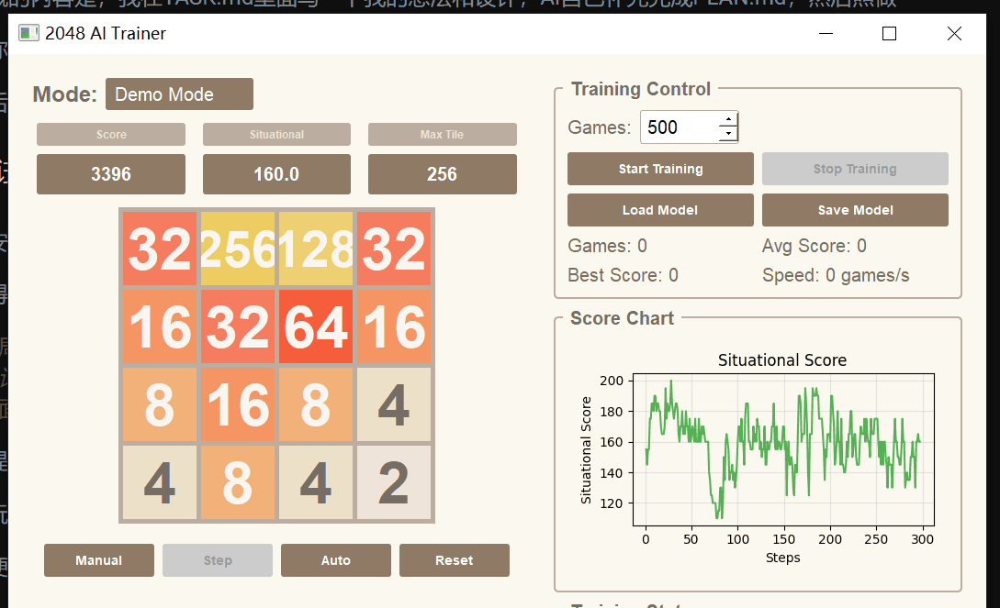
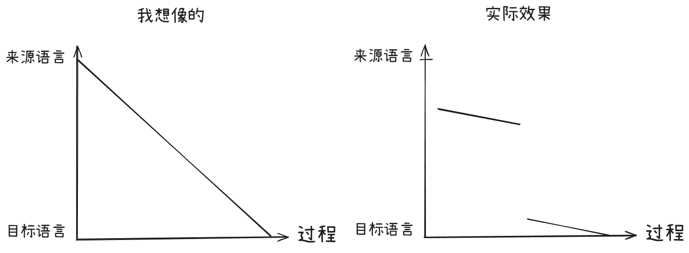

一段时间前我突发奇想，要不我也试着搞一个AI？可是我太菜了，不会啊，不过既然AI都这么发展了，要不用vibe coding试试呢？
于是就有了这个vAIbe项目——即vibe+ AI
顺带一提，代码放在Github和Huggingface上
开始之前
首先是写一个系统提示词，然后用符号链接把IFLOW.md和GEMINI.md给绑上了（虽然一直用的都是iflow，根本没用Gemini）
大概的内容是，我在TASK.md里面写一下我的想法和设计，AI自己补充完成PLAN.md，然后照做
随你便让它分析了一下我的电脑配置，太烂了，玩点小的吧
然后写了一个长长的文档介绍一下AI，感觉没什么的
小试牛刀——2048
我安排的第一个任务是基于Transformer的2048AI
值得一提的是我写了这么个玩意：
局面分数机制：根据空格数量、相邻连续数字数量（相邻砖块拥有相邻数字的数量，取最大值，不计算重复，如512 1024 2048为3，256 512 512 2为2）、最高数字的对数设计以恶合理的函数，局面分数越高越好
只提供配方不提供配比，配比交给AI了，但是后来看来，最终的效果似乎也就那样
这玩意我让它写了一个有GUI的，它用了QT
随便训了一会，总之能跑能用
干税收开了一把，效果就这样：

Diffutslator
(Huggingface里面放的是旧版本的，懒得更新了，看Github的去)
一方面是受到一些扩散模型的启发，比如Mecury Coder，另一方面是我在学校玩词典笔的时候会试着拿倒着扫扫出一堆混乱的玩意，翻译出一堆看起来读得通的句子，有时候结果会很有趣
我想能不能搞一个扩散模型用于翻译呢？要是效果不好可不可以像那词典笔那样呢？
我的想法是这样的：首先把被翻译的一步步变成噪声，然后到了一定阈值再把噪声变回来
首先是找数据集，我先是在网上找了个叫Tatoaba的，感觉质量不太行，但还是用了，还有一个在Kaggle找的
于是我详细编写了一个PLAN.md，在与AI周旋好几回之后，终于能够开始训练了
当然，数据太多我是不可能把它训完的，能训多少训多少，我直接把电脑摆拿挂机用手机玩终末地去了
首先是第一次训练（猜猜为什么是第一次呢？ ），终止于：
Epoch 1/10: |███████░░░░░░░░░░░░░░░░░░░░░░░| 28192/117893 [09:30:52<30:16:24, 0.82samples/s] loss=0.1364 (53 samples/s)
顺便搞了Huggingface Space（后面给出），整个过程使用AI用量：
| 模型 | 请求 | 输入Token | 输出Token |
|---|---|---|---|
| glm-5 | 461 | 22,092,684 | 200,912 |
结果一测，我懵逼了……这给出的是啥啊，我可是足足训练了九个半小时，看来是要告以失败了……唉（效果一会告诉你们）
然后到了学校，我一想，你说有没有可能，会不会Python读取文件的编码错误导致训练的时候出了问题（好像还真有这样的问题）
然后第二周回到家，马上打开电脑启动Agent开始修改程序并启动第二次训练了
但是这次相对来说训练比较少，只有8500次
Epoch 1/10: |██░░░░░░░░░░░░░░░░░░░░░░░░░░░░| 8499/116958 [02:56:13<37:28:57, 0.80samples/s] loss=0.9071 (51 samples/s)
| 模型 | 请求 | 输入Token | 输出Token |
|---|---|---|---|
| glm-5 | 74 | 4,577,754 | 56,356 |
然而，效果依旧不行，和上次差不多，看来是失败了
那么效果如何呢？我随便跑了两下：
>>> zh: 你好
Step 980 ( 0.0%) [zh] → 迹示度度
Step 880 ( 10.0%) [zh] → 迹示度從
Step 780 ( 20.0%) [zh] → 迹示度從
Step 680 ( 30.0%) [en] → such leman slowly boys
Step 580 ( 40.0%) [en] → such leman slowly boys
Step 480 ( 50.0%) [en] → such leman slowly boys
Step 380 ( 60.0%) [en] → such leman slowly boys
Step 280 ( 70.0%) [en] → such leman slowly boys
Step 180 ( 80.0%) [en] → such leman slowly boys
Step 80 ( 90.0%) [en] → such leman slowly boys
输出: such leman slowly boys
>>> en: hello
Step 980 ( 0.0%) [en] → risky respect advised va own
Step 880 ( 10.0%) [en] → beli respect advised va own
Step 780 ( 20.0%) [en] → beli ffec advised physici prices
Step 680 ( 30.0%) [zh] → 用为听教做
Step 580 ( 40.0%) [zh] → 用为听教做
Step 480 ( 50.0%) [zh] → 用为听教做
Step 380 ( 60.0%) [zh] → 用为听教做
Step 280 ( 70.0%) [zh] → 用为听教做
Step 180 ( 80.0%) [zh] → 用为听教做
Step 80 ( 90.0%) [zh] → 用为听教做
输出: 用为听教做
可以到HF Space上面可以自行体验
与我实际想要的效果偏差还是蛮大的：

算了算了就这样吧
对了，仓库中diffutslator/chackpoints中有两个文件，一个叫errored_model.pt，就是前面第一次训练的那个模型的权重，而step_8500.pt就是第二次的
没有结尾